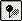

Географическая привязка растровых данных в ImageWarp
Описание одного из самых простых методов пространственной привязки растровых данных.
Данный метод является одним из самых простых и быстрых методов пространственной привязки растровых данных не требующий отдельного програмного обеспечения, кроме бесплатно распространяемого расширения ImageWarp для Arcview (aвтор: Kenneth R. McVay) и модуля Spatial Analyst.
Обычно трансформацию растровых данных осуществляют в других приложениях, средствами Arcview, без привлечения платных модулей (таких как, например, Image Analysis) осуществлять трансформацию растров невозможно, зато можно использовать средства Spatial Analyst для трансформации grid'ов (растровая модель данных используемая в Spatial Analyst и Arcinfo Workstation).
Более широкие возможности по обработке растровых данных предоставляют специализированные пакеты, например ERDAS IMAGINE, ENVI и другие.
Если вы все-таки решили привязать растр не выходя из Arcview.
1. Установите расширение ImageWarp (1.3 Mb) . Обратите внимание, что для работы с ним необходим модуль Spatial Analyst - совершенно отдельный продукт, к тому же платный, так что если у вас его нет, то воспользоваться ImageWarp невозможно. При установке расширения необходимо указать папку, куда установлен Arcview GIS, это должна быть папка на один уровень выше папок Ext32 и Bin32. Например: C:\Gis\Arcview3\AV_GIS30\ARCVIEW\
2. Запустите Arcview и добавьте расширение ImageWarp (File\Extensions...), модуль Spatial Analyst добавится автоматически (если он установлен, см. пункт 1).

3. Откройте сессию ImageWarp: Проект - ImageWarp\ImageWarp session. Для этого сделайте активным менеджер проекта и выберите из меню ImageWarp.

4. Укажите какой растр вы хотите привязать Image to be rectified, и тему которая будет использоваться в качестве основы к которой будете привязывать растр Theme to rectify to. В качестве опорной темы может использоваться как растр так и векторный слой. Для этого примера мы используем привязку топографической карты (test.tif) к созданному специально для этого точечному шейп-файлу, где каждая точка - один из углов карты (как создать такой файл).

5. Если ваша опорная тема - векторный слой в lat\long, но вы хотите привязать растр в определенную проекцию, имеет смысл ее задать. В нашем случае точечная тема с координатами углов находится в географической проекции, а растр мы хотим получить в проекции Альберса, поэтому зададим эту проекцию виду.

6. Создайте новый файл опорных точек (тиков) или загрузите уже существующий. Файл тиков представляет собой обычный файл DBF, один из стандартных форматов таблиц понимаемый Arcview. При желании содержимое этого файла можно подредактировать в Excel или в том же Arcview.

7. С помощью инструмента  начинайте расставлять тики попеременно щелкая сначала на опорной теме, потом на растре который вы привязываете. То есть от окна содержащего источник координат TO (в нашем случае содержащего точки) к окну, содержащему привязываемый растр а не наоборот, как в другом программном обеспечении.

8. Необходимо расставить несколько точек привязки, в зависимости от выбранной степени преобразования (см. ниже). При желании можно так же:
- удалить выбранную точку

- удалить все точки

- включить\выключить выбранные точки привязке
 отключенные тики будут присутствовать в dbf файле, но не будут
участвовать в расчете коэффициентов трансформации
отключенные тики будут присутствовать в dbf файле, но не будут
участвовать в расчете коэффициентов трансформации
9. После расстановки тиков нужно расчитать среднеквадратичную
ошибку (RMS - root mean square error) для заданной степени полинома  . Степень
полинома определяет насколько сильные деформации будет претерпевать
растр для соответствия расставленным опорным точкам. Обычно используют
степень полинома не более 2-3. Большие полиномы вносят слишком
большие искажения в растр. Для расчета RMS для определенной степени
полинома необходимо определенное количество опорных точек. Число
точек для полинома N будет равно n = (p + 1) (p + 2) / 2.То
есть для полинома 1 степени, количество пар точек должно быть
равно 3, для 2 полинома - 6, и т.д.
. Степень
полинома определяет насколько сильные деформации будет претерпевать
растр для соответствия расставленным опорным точкам. Обычно используют
степень полинома не более 2-3. Большие полиномы вносят слишком
большие искажения в растр. Для расчета RMS для определенной степени
полинома необходимо определенное количество опорных точек. Число
точек для полинома N будет равно n = (p + 1) (p + 2) / 2.То
есть для полинома 1 степени, количество пар точек должно быть
равно 3, для 2 полинома - 6, и т.д.
10. Начать трансформацию 
11. Выбрать тип интерполяции яркости пикселов, то есть данных находящихся в ячейках растра. Существует 3 варианта (различающихся по количеству соседних пикселов участвующих в расчете результирующего значения пиксела на выходе):
- Cubic Convolution - Кубическая свертка, применяется для трансформации аэро- и космической съемки, полноцветных (true color) растров, в случае когда требуется максимально сохранить объекты визуально. Линейные объекты остаются линиями при повороте, хотя количество пикселов определенного значения (цвета) увеличивается, появляются пикселы с новыми, промежуточными-интерполированными значениями (максимальное количество пикселов участвует в расчете яркости результирующего пиксела);
- Bilinear interpolation - Билинейная интерполяция
- Nearest Neiboughr - Метод ближайшего соседа, используется при трансформации индексированных растров, когда нужно сохранить статистику изображения (для расчета яркости результирующего пиксела используется только один пиксел). При повороте линейных объектов они становятся ступенчатыми, но количество пикселов с определенным значением в конечном растре тоже, что и в исходном растре;
12. Выбрать формат конечного растра BSQ BIP BIL JPG TIF. Любой из этих форматов может быть потом загружен в Arcview, JPG потребует для этого включения специального расширения (File\Extensions\JPEG(JFIF) Image Support).
13. Выбрать размер пиксела. Значение 0 - дает возможность программе самой подобрать размер пиксела так, чтобы количество рядов\колонок в конечном растре максимально соответствовало начальному (размер файла на диске начального растра тоже будет примерно равен размеру конечному). Это не всегда хорошо, в случае, когда поворот засчет перепроектирования велик и растр значительно меняет размеры. В этом случае количество рядов\колонок может сильно увеличиться, а 0 заставит программу сильно уменьшить разрешение растра, что ухудшит его качество.

14. Выбрать куда сохранить файл конечного растра.
ImageWarp переводит растр в грид - растровую модель данных используемую Spatial Analyst'ом. Грид может быть перепроектирован методами Spatial Analyst. После трансформации грид переводится в растр обратно и сохраняется в нужном формате.
Конечно в целях эффективности и экономии времени следует попробовать найти другой способ трансформации, так как перевод в грид и обратно в растр требует достаточно много времени. Но для первого знакомства с привязкой растров этого вполне достаточно.
Ссылки по теме
Дата создания: 22.10.2002
Автор(ы): Максим Дубинин